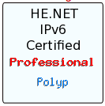

IPv6
Cette doc montre comment utiliser IPv6, pas ce qu'est IPv6. D'excellentes docs existent à ce sujet.
Sommaire
Le FAI
Chez free, on peut avoir gratuitement un bloc d'adresses IPv6 rien qu'à soi, en cochant une case sur la console de gestion et en redémarrant la FreeBox. Cool !
Oui, sauf que le tunnel 6to4rd utilisé (pour faire circuler le flux IPv6 dans le tunnel IPv4 jusqu'au backbone IPv6 de Free) ne peut être routé ! Vous avez un beau /64 ...qui doit être à plat depuis la freebox!
Plusieurs solutions existent des plus crados aux plus propres.
Au final, on va juste virer la solution semi-geek de Free, pour un truc qui marche : Les tunnels Hurricane-Electric.
Un point de théorie
Que ce soit chez Free ou HE, ils fournissent, par défaut un /64 : le préfixe (on ne parle plus de masque mais de préfixe en IPv6) est long de 64 bits et la partie machine de 64 bits.
Or ce /64 n'est pas découpable en sous-réseaux; vous aurez un réseau à plat.
Pour obtenir des sous-réseaux, il faut demander au FAI de réduire la partie réseau. Ainsi chez HE, ils proposent de router un /48 au lieu d'un /64 et de vous laisser ainsi un /16 ,c'est à dire plus de 65000 sous-réseaux de 2^64 machines chacun; vous aurez de la marge.
Architecture
Derrière le routeur, je souhaite avoir potentiellement 3 réseaux physiques connectés :
- 1 DMZ avec les serveurs en dual-stack accessibles directement en IPv6 et en rdr (un D-NAT) en IPv4.
- 1 LAN clients IPv4 only
- 1 LAN de test disponible si j'ajoute une carte réseau au routeur.
Tunnel HE
Le principe est de tunneler {tunneliser ?} les flux IPv6 dans des tunnels IPv4. Ca choque, ça devrait lagger..en faut pas trop.HE possède des POP {Point Of Presence} un peu partout.
Ils utilisent 6in4 comme protocole de tunnel.
Une fois inscrit sur le site, vous commencez, jeune padawan que vous êtes, en statut Newbie.
Moi, qui me la joue un peu, je suis maintenant :. Ça claque!
{kind=link}
IPv6 sur la passerelle OpenBSD
- On route les paquets IPv6, ce qui est bien sur un routeur.
sysctl -w net.inet6.ip6.forwarding=1
- On demande à créer un tunnel chez HE et on recopie (voire on copie/colle) les exemples de config :
#Tunnel HE IPv6 ifconfig gif0 tunnel 82.237.239.48 216.66.84.42 ifconfig gif0 inet6 alias 2001:470:00ff:cba::2 2001:470:00ff:cba::1 prefixlen 128 route -n add -inet6 default 2001:470:00ff:cba::1
Votre routeur a une double-pile IP [On causera de dual-stack].
- Maintenant, en IPv6, on n'utilise pas DHCPv6, grosse verrue moisie passéiste, mais directement radvd qui implémente le protocole ndp.
- Dans /etc/rc.conf :
perl -pi -e 's/rtadvd_flags=NO/rtadvd_flags="sis1"/' /etc/rc.conf
- Alors, je rappelle ici qu'en IPv6 la longueur du préfixe est toujours de 64 ! Pas de subnetting de longueur variable!
Donc, choisissez vous-même vos subnets et jouant sur le préfixe.
- On configure le routeur :
echo "
sis1:\
- addrs#1:addr="2001:XXX:YY:100::":prefixlen#64:raflags#64:
sis2:\
- addrs#1:addr="2001:XXX:YY:200::":prefixlen#64:raflags#64:
" >> /etc/rtadvd.conf
Vous alimentez vos deux sous-réseaux physiques avec deux préfixes différents. Votre fournisseur de tunnel vous a fourni un /48 (2001:XXX:YY), vous ajoutez, au choix la suite (:100 et :200 ici)
Et pour faire marcher le tout, tout de suite :
rtadvd sis1 sis2 sis3 whatever4
C'est bon, votre routeur diffuse des annonces de préfixe.
Sur les clients
rtsol interface
Obsolète : Solution Free
Cette solution ne permet pas d'avoir simplement un accès IPv6 au delà d'un ensemble de machines à plat sur un LAN derrière la FreeBox; pour celà voir tunnel HE.
ndp -s addr_ipv6 mac_addr proxy sur
IPv6 sur la passerelle OpenBSD
Adressage
Activation de l'acceptation des infos ICMPv6 depuis le routeur Free
sysctl -w net.inet6.ip6.accept_rtadv=1
Idem au reboot
perl -pi -e 's/#net.inet6.ip6.accept_rtadv=1/net.inet6.ip6.accept_rtadv=1/' /etc/sysctl.conf
Vérification que l'IPv6 n'arrivera pas encore sur mon LAN interne, chaque chose en son temps.
sysctl -a |grep inet6 |grep forward net.inet6.ip6.forwarding=0 net.inet6.ip6.mforwarding=0
dhclient devient rtsol (routeur sollicitation)
rtsol xl0
et
ifconfig xl0
ajoute une ligne:
inet6 2a01:e35:2ede:f300:201:2ff:fe9d:daee prefixlen 64 pltime 86134 vltime 86134
où 2a01:e35:2EDE:F300::/64 est mon préfixe à moi alloué par mon gentil FAI IPv6-compliant. avec :
2a01:e3 préfixe Free aux abonnés
5:2EDE:F30 = Mon IPv4 en hexa
0 Reservé
:: Pour nous
Routage, filtrage, etc..
- On laisse passer l'IPv6 vers les machines des LAN
sysctl -w net.inet6.ip6.forwarding=1
pour le multicast, on verra : net.inet6.ip6.mforwarding=0
- On annonce le prefixe et les infos qui vont aux machines de la DMZ (ICMPv6 rulez!)
perl -pi -e 's/rtadvd_flags=NO/rtadvd_flags="sis1"/' /etc/rc.conf
- On active le proxy NDP (Neighbor Discovery Protocol, le remplacement de ARP en plus beaucoup mieux)
Services IPv6
DNS : Bind
RR
Les enregistrements IN A deviennent IN AAA :
On a donc ici :
dirac IN AAAA 2a01:e35:2ede:f300:201:2ff:fe9d:daee
Binding ipv6
listen-on-v6 port 53 { any; };
Apache
1.3 n'est pas compatible, faut passer en 2.0, sauf sous....OpenBSD dont l'apache 1.3 cause IPv6 ;-)
- Ajouter
Listen [::]:80
à /var/www/conf/httpd.conf
Sécurité
- Revoyez scrupuleusement vos règles de pare-feu ! De beaux trous en perspective... En phase de test, je me suis rendu compte que le wiki perso de mon portable natté en IPv4 devenait...public!
Test de connectivité
Hurricane Electric
Tunnels
Ils proposent gratuitement jusqu'à 5 tunnels IPv6.
Certification
- Niveau Newbie
Vous avez répondu aux questions de base sur IPv6.
- Niveau Explorer
Vous pouvez accéder au site hurricane en IPv6.
- Niveau Enthusiast
Vous avez mis en place un serveur Web en IPv6.
- Niveau Administrator
Vous avez mis en place un serveur Mail en IPv6.
- Niveau Professionnal
Vous avez mis en place les enregistrements DNS directs et inverses en IPv6.
Exercices et codes
Existe également une base de codes disponibles servant aussi de thèmes d'exercices. Pas forcément orientés IPv6, ces exos sont très détaillés, progressifs.
les langages suivants sont proposés :
- Perl
- PHP
- Python
- ruby
- SQLite
- HTML
- XML
- CSS
- JQuery
- Javascript